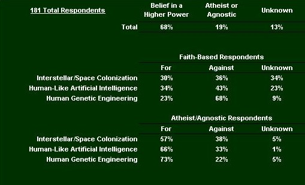

Human Origins
Human Origins
How does your Origins Belief System affect your views on Future Human Evolution?
What is an Origins Belief System? Put quite simply, it is the collection of beliefs one has with regard to the origins of life. While there are nearly as many variations of these beliefs as there are people, they break down into two main categories:
• Science-based, and
• Spritual-based.
It would be nice indeed if the world consisted of these two black and white camps. The science based contingent having a firm and rooted belief that the universe is comprised solely of the physical- strings, particles, energy, and the stuff of the big bang or before combining coincidentally into the shape and life we are experiencing today. The spiritual team rejecting the idea of an unguided universe and believing that every jot and tittle is part of the master plan created and controlled by HIM.
Unfortunately, people do not always fit into neat boxes like these. One's belief in a higher power does not always preclude the notion of 'nature' taking its course, the evolutionary process, and the basics of modern physics. A case in point are the
Deists, who believe there was a creator who put the universe in motion and who continues to let it run according to the laws established without 'daily' interference. There are many such variations on the scale between science and religion, but we digress from the main point of this article.
The issue at hand is how does one's origins belief system affect his or her support of human advancement technologies. We had a theory that the science-based camp would be more in favor of these technologies than the faith based group. The rationale being that the faith-based individuals would view the manipulation of 'God's work' objectionable. Rather than print this conjecture for fact, we conducted a random survey in January and February of 2004 to see if our theory was valid. The results are tabulated below.

What we discoverd was the following.
• The large majority of our respondents were faith-based.
• The atheist/agnostics were more opinionated.
• As a general rule, the faith-based respondents were more against human advancement technologies than their atheist and agnostic counterparts, but there was not a clear majority. The undecided vote prevented that.
• The biggest area of contention was genetic engineering. Everyone was more opinionated on this topic (fewer undecideds), and there was the greatest degree of polarization.
We interpret the large faith-based undecided vote as an indicator of the social and moral ambiguity surrounding human advancement technologies, and the general lack of public education and knowledge about these topics. It is our hope that as we continue to build this website and our outreach efforts, that we will have a positive impact on the degree to which these topics become a part of the social discourse, and that we will be able to remove some of the misunderstanding about the roles these technologies can play in benefiting us all.
^ Top ^